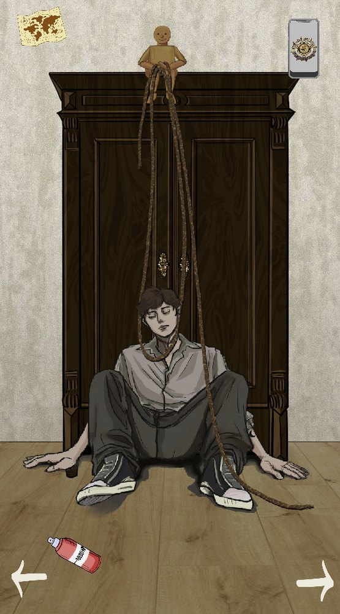
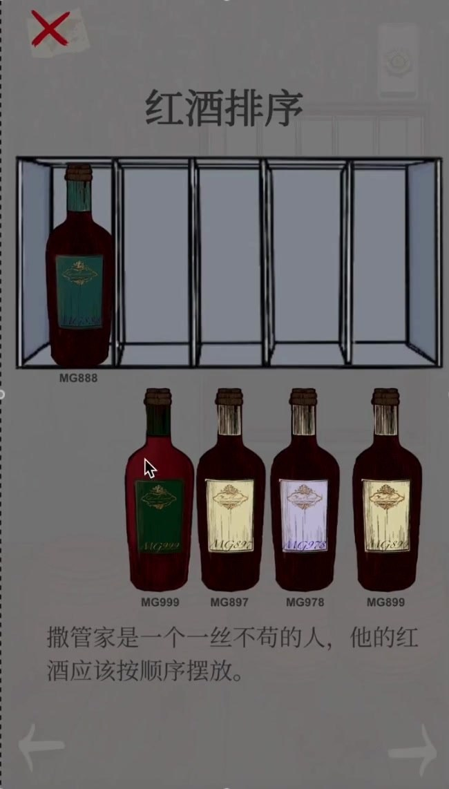
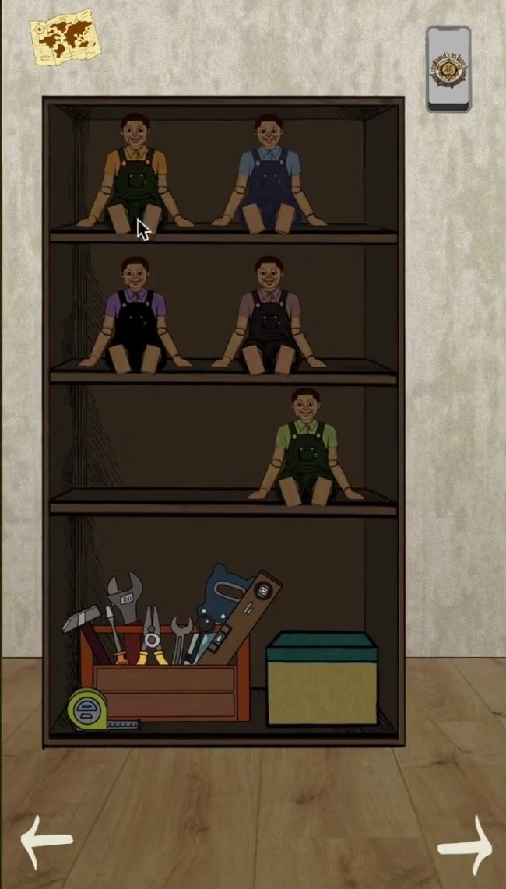
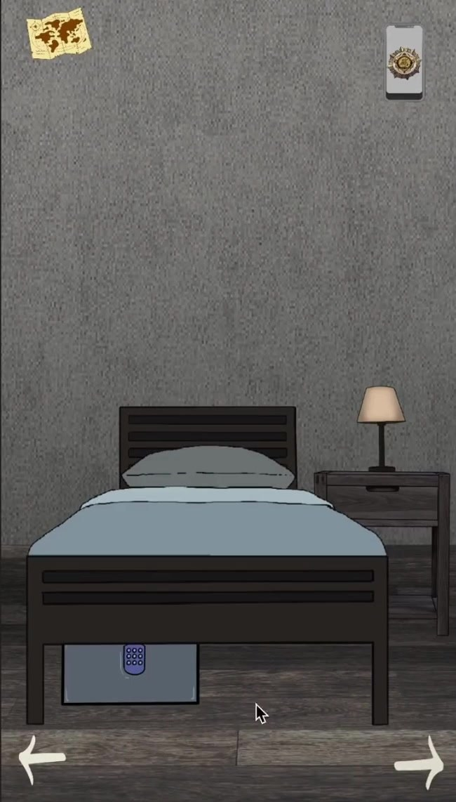
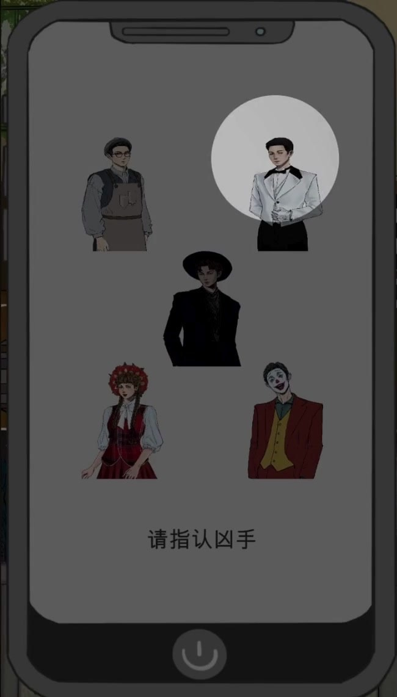
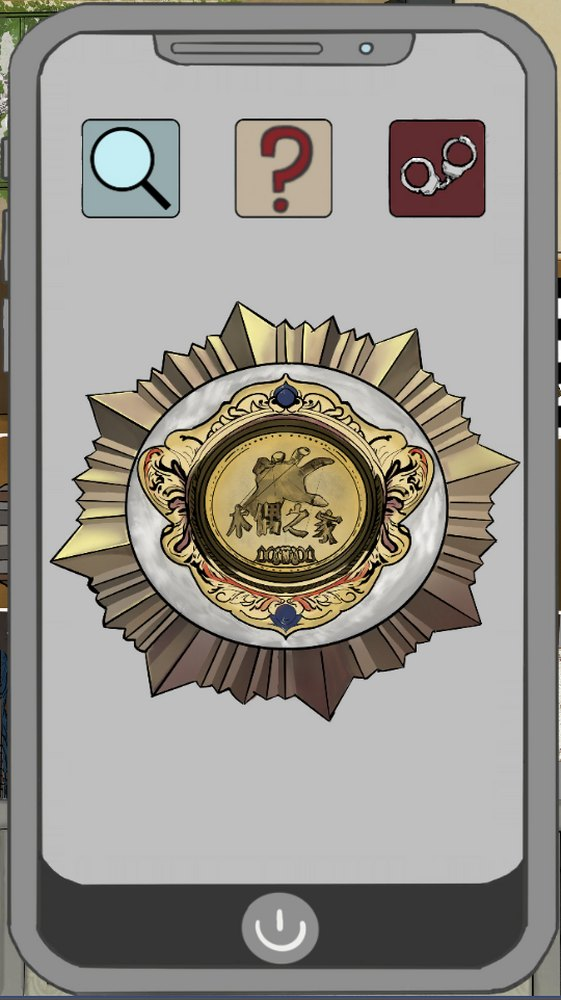
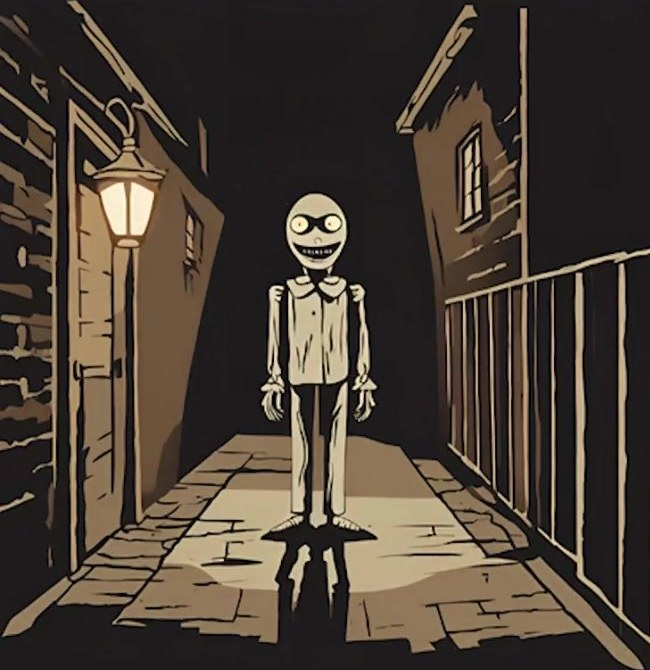
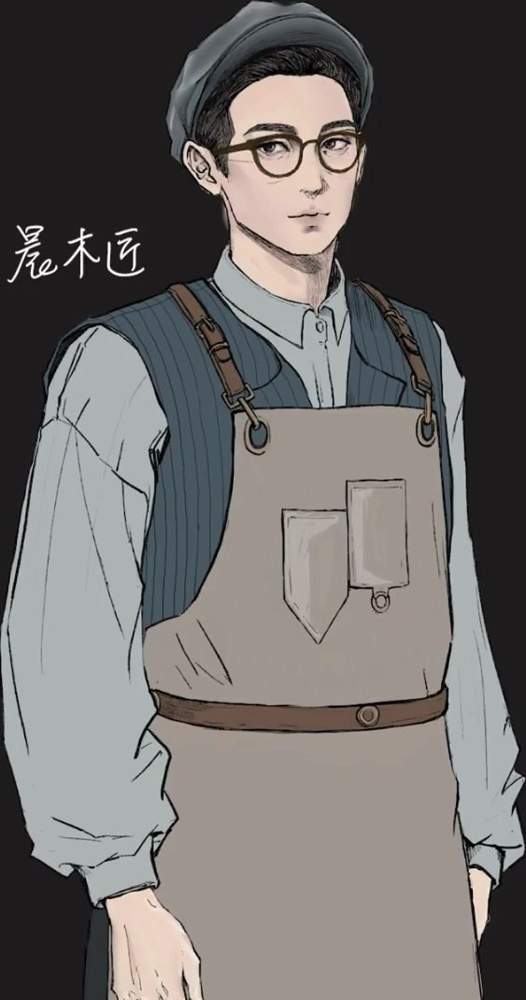

Technical art highlights
- Additive scene loading that preserves puzzle state
- Persistent cross-scene phone UI and manager singletons
- EventSystem drag-and-drop with snap validation
- Audio feedback wired into puzzle states
- WebGL build for instant browser play
- Led a 7-person team as producer
01Overview
Puppet Mystery (木偶之家：古堡谜案) reimagines a case from Mango TV’s Who’s the Murderer as a first-person 2D deduction game. Players explore a mansion, collect clues, solve puzzles and vote to uncover the truth of an incident buried for ten years.
Made for the Malanshan Cup Game Innovation & Entrepreneurship competition. As lead developer and producer I built the core Unity architecture and puzzle systems and managed a 7-person team to a 10-minute playable demo in three months. It’s playable in the browser (WebGL).
02My contributions
Scene architecture
A persistent GameManager that loads rooms additively and hides rather than unloads them, so every puzzle keeps its state.
Puzzle systems
Drag-and-drop ordering with snap validation, clue unlocking, blurred-evidence reveals and audio feedback.
Persistent phone UI
A cross-scene detective phone (singleton) that holds clues and the final suspect vote.
Team lead & producer
Managed 7 people across design, narrative, art and programming over a three-month cycle.
03Gameplay








04Code deep-dive
Two systems carry most of the game. Excerpts are condensed from the original Unity C# source, with comments translated to English.
1 · Additive room loading that preserves state
Each room is its own scene. Instead of reloading scenes (which would reset every drawer, lock and clue), the GameManager loads a room additively the first time, then just hides and restores its root objects on later visits. A transition camera covers the async load, and the phone UI and manager survive with DontDestroyOnLoad.
public class GameManager : MonoBehaviour
{
public static GameManager Instance { get; private set; }
public GameObject phoneUI; // cross-scene UI (detective phone)
public GameObject transitionCamera; // buffer camera shown while a room loads
public Dictionary<string, object> savedStates = new();
void Awake()
{
if (Instance != null) { Destroy(gameObject); return; }
Instance = this;
DontDestroyOnLoad(gameObject);
DontDestroyOnLoad(phoneUI);
DontDestroyOnLoad(transitionCamera);
}
public void EnterRoom(string roomScene)
{
HideRootObjects(mainMapScene); // park the map, don't unload it
Scene existing = SceneManager.GetSceneByName(roomScene);
if (existing.IsValid() && existing.isLoaded) // room visited before?
{
ShowRootObjects(existing); // restore it exactly as the player left it
EnableRoomCamera(roomScene);
return;
}
StartCoroutine(LoadRoomSceneAsync(roomScene)); // first visit: load additively
}
IEnumerator LoadRoomSceneAsync(string scene)
{
ShowTransitionCamera(); phoneUI.SetActive(false);
var load = SceneManager.LoadSceneAsync(scene, LoadSceneMode.Additive);
while (!load.isDone) yield return null;
EnableRoomCamera(scene); EnableSceneEventSystem(scene);
HideTransitionCamera(); phoneUI.SetActive(true);
}
public void ExitRoom() // hide, don't unload: puzzle state survives
{
foreach (var go in SceneManager.GetSceneByName(currentRoomScene).GetRootGameObjects())
go.SetActive(false);
ShowRootObjects(mainMapScene);
}
}
2 · Drag-and-drop puzzle with snap validation
The wine-bottle puzzle uses Unity’s EventSystem drag interfaces. Bottles follow the pointer in canvas space, snap into their slot within a distance threshold or spring back, and a static registry checks whether all bottles are placed before unlocking the next clue.
public class WineDraggableItem : MonoBehaviour, IBeginDragHandler, IDragHandler, IEndDragHandler
{
public Transform targetSlot;
public float snapDistance = 100f;
public AudioSource placeSound, unlockSound;
static List<WineDraggableItem> allItems = new();
public void OnDrag(PointerEventData e)
{
RectTransformUtility.ScreenPointToLocalPointInRectangle(
canvas.transform as RectTransform, e.position, canvas.worldCamera, out Vector2 p);
transform.localPosition = p; // follow the pointer in canvas space
}
public void OnEndDrag(PointerEventData e)
{
canvasGroup.blocksRaycasts = true;
if (Vector3.Distance(transform.position, targetSlot.position) <= snapDistance)
{
transform.position = targetSlot.position; // snap into the correct slot
transform.SetParent(targetSlot);
placeSound?.Play();
CheckIfAllCorrect();
}
else transform.position = originalPosition; // wrong spot: spring back
}
void CheckIfAllCorrect()
{
foreach (var item in allItems)
if (item.transform.parent != item.targetSlot) return;
unlockSound?.Play();
UnlockAndCleanUI(); // grant clue keys, un-blur evidence, close the puzzle canvas
}
}
05Audio
Sound tells the player a move worked: a place sound on every correct snap, an unlock sting when a puzzle resolves, over a looping mansion theme.
06Challenges & solutions
Room scenes reset when revisited
Loading each room as a normal scene would wipe opened drawers, placed bottles and found clues whenever players returned.
Additive loading + hide/restore
Rooms load additively once, then their root objects are hidden and restored, so state persists without a save system.
Narrative and puzzles drifting apart
Adapting a TV mystery risked puzzles that felt disconnected from the deduction story.
Clue-driven progression
Each puzzle unlocks clue keys and un-blurs evidence that feeds the final vote, so solving puzzles is how players advance the case.
Seven people, three months
Design, narrative, art and code all had to land in one competition build.
Lead-dev + producer role
Owned the core systems myself while running the schedule, keeping scope to a polished 10-minute demo.